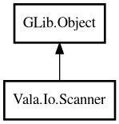

Scanner
Object Hierarchy:

Description:
public class Scanner : Object
Scanner splits input into tokens and provides typed parsing.
Inspired by Java's Scanner and Go's bufio.Scanner, this class reads from a file, string, or standard input and returns tokens separated
by a configurable delimiter (default: whitespace).
Example:
var scanner = Scanner.fromString ("hello world 42");
assert (scanner.next () == "hello");
assert (scanner.next () == "world");
assert (scanner.nextInt () == 42);
scanner.close ();
Content:
Static methods:
- public static Scanner? fromFile (Path path)
Creates a Scanner that reads from a file.
- public static Scanner? fromStdin ()
Creates a Scanner that reads from standard input.
- public static Scanner fromString (string s)
Creates a Scanner that reads from a string.
Methods:
- public void close ()
Closes the underlying stream. After closing, all read operations
return null, 0, or false.
- public bool hasNextInt ()
Returns whether the next token can be parsed as an integer.
- public bool hasNextLine ()
Returns whether there is at least one more line to read.
- public string? next ()
Returns the next token from the input.
- public double nextDouble ()
Reads the next token and parses it as a double.
- public int nextInt ()
Reads the next token and parses it as an integer.
- public string? nextLine ()
Reads the next line from the input.
- public void setDelimiter (string pattern)
Sets the delimiter pattern used to split tokens.
Inherited Members:
All known members inherited from class GLib.Object
- @get
- @new
- @ref
- @set
- add_toggle_ref
- add_weak_pointer
- bind_property
- connect
- constructed
- disconnect
- dispose
- dup_data
- dup_qdata
- force_floating
- freeze_notify
- get_class
- get_data
- get_property
- get_qdata
- get_type
- getv
- interface_find_property
- interface_install_property
- interface_list_properties
- is_floating
- new_valist
- new_with_properties
- newv
- notify
- notify_property
- ref_count
- ref_sink
- remove_toggle_ref
- remove_weak_pointer
- replace_data
- replace_qdata
- set_data
- set_data_full
- set_property
- set_qdata
- set_qdata_full
- set_valist
- setv
- steal_data
- steal_qdata
- thaw_notify
- unref
- watch_closure
- weak_ref
- weak_unref